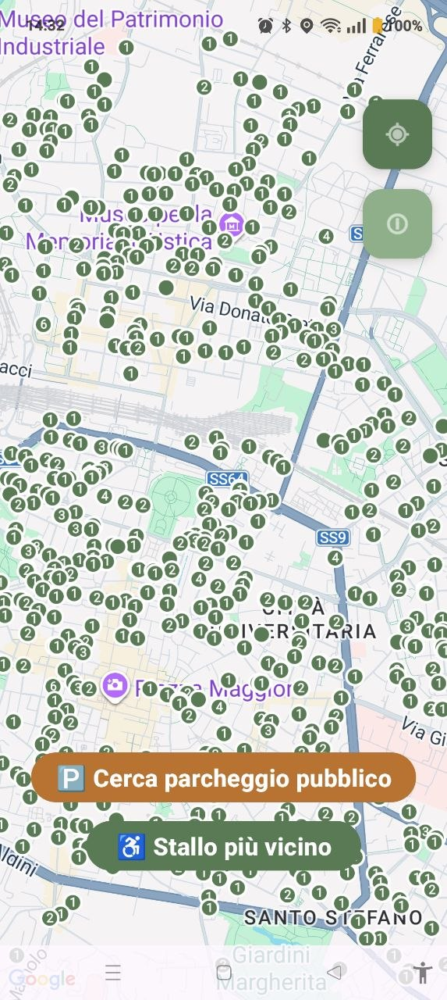
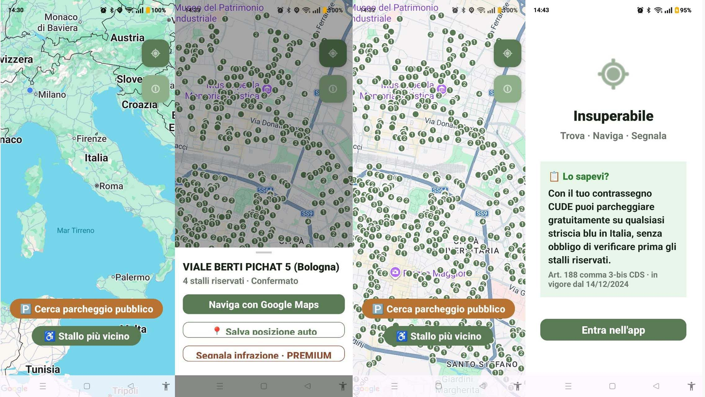

La guida completa
In Italia non esisteva nessuna app dedicata a mappare gli stalli di parcheggio riservati ai titolari di contrassegno CUDE. Nessuna mappa aggiornata, nessun riferimento unico, nessuno strumento pratico. Ho scritto, risposto e discusso con oltre 250 Comuni italiani su 7.904, chiedendo i dati ufficiali, ho aspettato mesi, ho convertito formati improbabili — e ho costruito Insuperabile.
È un'app Android gratuita. Questo documento spiega come funziona, cosa può e cosa non può fare, e dove sta andando.
📲 Scarica su Google PlayIl dataset di Insuperabile costituisce una banca dati tutelata ai sensi degli artt. 102-bis e ss. della Legge 633/1941. Sono vietati l'estrazione e il reimpiego, anche parziali, non autorizzati dal costitutore. Ogni versione del dataset è tracciata cronologicamente e la sua paternità è documentabile in ogni momento; l'uso non autorizzato è perseguibile ai sensi di legge.

Le funzioni gratuite coprono l'uso quotidiano completo:
Mappa interattiva — gli stalli riservati appaiono sulla mappa nella tua zona o nella zona che stai consultando
Stallo più vicino — un tap sul pulsante verde trova automaticamente lo stallo riservato più prossimo alla tua posizione e lo centra sulla mappa
Navigazione integrata — seleziona uno stallo e avvia Google Maps con il percorso verso di esso
Cerca parcheggio pubblico — se gli stalli riservati nelle vicinanze sono tutti occupati, il pulsante arancione mostra i parcheggi pubblici disponibili nell'area
Salva posizione auto — dopo aver parcheggiato, salva il punto esatto per ritrovare l'auto facilmente in seguito
Aggiungi uno stallo mancante — se noti uno stallo non presente sulla mappa, il pulsante ! apre StreetComplete, l'app collaborativa di OpenStreetMap. Gli stalli aggiunti lì entrano automaticamente in Insuperabile al successivo aggiornamento
Un singolo acquisto senza abbonamento sblocca tutte le funzioni avanzate, presenti e future:
Segnalazione infrazione — se trovi uno stallo occupato abusivamente, scatta una foto dall'app, aggiungi opzionalmente la targa e una nota: la segnalazione viene inviata automaticamente via email alla Polizia Municipale del Comune in cui ti trovi nel momento esatto della segnalazione — non alla tua PM di residenza. Nessun modulo da compilare, nessun numero da cercare
Ricerca per indirizzo (disponibile a breve) — cerca stalli vicino a un indirizzo specifico, non solo vicino a dove sei
Avvisi ZTL (in sviluppo) — segnalazione delle Zone a Traffico Limitato nelle città coperte, integrata nella mappa degli stalli
1. Apri l'app e autorizza la geolocalizzazione — serve solo per centrare la mappa sulla tua posizione, nessun dato viene trasmesso a terzi
2. Naviga sulla mappa — quando sei sufficientemente zoomato da vedere le strade distintamente, l'app carica automaticamente gli stalli nell'area visualizzata. I marker appaiono sulla mappa in pochi secondi
3. Tocca uno stallo per avviare Google Maps con il percorso verso di esso
Niente registrazione. Niente account. Niente dati personali raccolti durante l'uso base.
I dati degli stalli hanno due origini, riconoscibili a colpo d'occhio dal colore del marker:
Entrambi i tipi di marker sono utili e accurati nella pratica. La distinzione ti aiuta a valutare il grado di certezza.
I dati ufficiali comunali coprono oggi 19 città per un totale di oltre 23.500 stalli verificati:
Bergamo · Bologna · Cagliari · Cesena · Chieri · Firenze · Genova · Lecce · Livorno · Milano · Modena · Pavia · Pisa · Prato · Reggio Emilia · Siena · Torino · Trento · Verona
Stiamo continuando a richiedere dati ai Comuni. Ogni nuova città con dataset ufficiale viene aggiunta agli aggiornamenti periodici.
Dirlo chiaramente vale più di qualsiasi descrizione delle funzioni:
Non mostra se lo stallo è libero in tempo reale — la mappa indica dove si trovano gli stalli, non se sono occupati. Non esiste una fonte dati pubblica per questo in Italia
Non copre tutte le città italiane con dati ufficiali — la copertura dipende dalla disponibilità dei Comuni a condividere i dati
Non sostituisce Google Maps — la navigazione stradale è delegata a Google Maps; Insuperabile si occupa solo di trovare lo stallo
Non garantisce che lo stallo esista ancora — i dataset comunali non si aggiornano in tempo reale
Perché vedo stalli in una città non nella lista delle 19?
Le 19 città hanno dati ufficiali comunali. Per tutte le altre, l'app mostra comunque gli stalli presenti su OpenStreetMap. La differenza è nella fonte e nel livello di verifica, non nella presenza degli stalli.
Cosa significa il marker ambra?
Dato OpenStreetMap — affidabile nella pratica ma non verificato ufficialmente da un Comune. Se lo trovi errato, il pulsante ! ti permette di segnalarlo e correggerlo.
L'app funziona senza internet?
Per le 19 città del bundle sì — i dati sono inclusi nell'app e non richiedono connessione. Per le altre città serve la connessione.
Come aggiungo uno stallo mancante?
Tocca il pulsante ! sulla mappa, seleziona "Aggiungi stallo mancante": si apre StreetComplete, l'app più semplice per contribuire a OpenStreetMap. Lo stallo che aggiungi lì compare in Insuperabile all'aggiornamento successivo.
La ricerca per indirizzo è precisa? (Premium)
Generalmente buona, ma può variare di 50-80 metri se l'edificio non è mappato singolarmente in OpenStreetMap. Sufficiente per centrare la mappa nella zona giusta.
La funzione premium è un abbonamento?
No. È un acquisto una tantum di €2,99 che sblocca tutte le funzioni avanzate in modo permanente, incluse quelle future.
Come funziona la segnalazione infrazione? (Premium)
Tocca lo stallo occupato abusivamente, premi "Segnala infrazione": scatta una foto, aggiungi opzionalmente targa e note. L'app rileva automaticamente il Comune in cui ti trovi e invia la segnalazione alla Polizia Municipale competente — non alla tua PM di residenza.
Parcheggi preferiti — salva localmente gli stalli che usi più spesso per trovarli senza cercare ogni volta. Funzione gratuita, in sviluppo
Ho sviluppato Insuperabile da solo, senza aziende, senza investitori, senza pubblicità. È un progetto nato da una necessità concreta — e costruito con la stessa concretezza.
Il modello è semplice: app gratuita per l'uso base, una funzione premium una tantum senza abbonamento, donazioni libere per chi vuole sostenere lo sviluppo.
☕ Offrimi un caffè — se l'app ti è utile e vuoi sostenere il progetto
L'app non raccoglie dati personali durante l'uso base. La geolocalizzazione viene usata solo dal tuo telefono per centrare la mappa — non viene mai trasmessa ai server dell'app.
Fa eccezione la funzione premium di segnalazione infrazione: quando la usi volontariamente, la foto e la posizione dello stallo vengono trasmesse alla Polizia Municipale — è lo scopo stesso della funzione.
Le uniche informazioni tracciate in modo anonimo sono i conteggi di Firebase Analytics: quanti utenti aprono l'app e da quali città. Nessun dato personale, nessuna profilazione.
Nessuna pubblicità. Nessuna vendita di dati.

Toccando un marker si apre un pannello con tre opzioni:
Non è necessario fotografare il trasgressore — anzi è sconsigliabile, per non incorrere in contestazioni sulla privacy. È sufficiente documentare il veicolo e la targa. La sanzione amministrativa viene notificata al proprietario del veicolo; per quanto riguarda i punti patente, il trasgressore dovrà comunicare autonomamente i propri dati con un'istanza separata e successiva.
La segnalazione viene inviata automaticamente alla Polizia Municipale del Comune in cui ti trovi nel momento esatto dell'invio.
Barra di ricerca in cima alla mappa: digita un indirizzo italiano e la mappa si centra sulla zona. Precisione tipica: 50-80 metri con numero civico.
Canale Telegram — aggiornamenti e novità → t.me/stallidisabili
Chat per commenti e suggerimenti → t.me/stallidisabile
Pagina Facebook → facebook.com/parcheggidisabili
Video tutorial → youtube.com/@massiminobellavita
Recensioni su Google Play — anche una riga aiuta l'app a essere trovata da chi ne ha bisogno